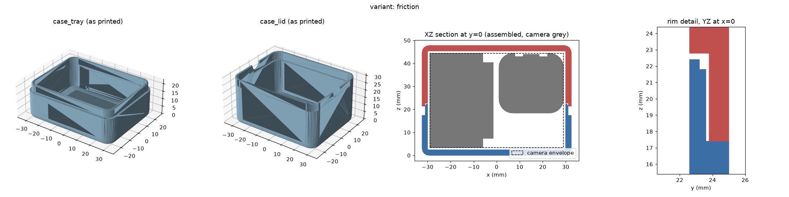
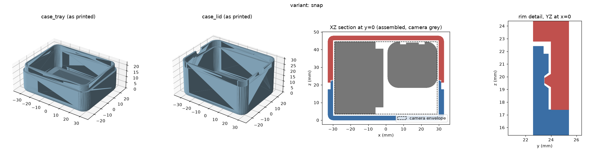

Friction fit
64.8 x 50.0 x 47.8 mm outer · ~44 g of filament · Slip-fit tongue and groove, no hardware. Easiest to print and tune. Stays shut on a desk; not guaranteed upside down in a bag.
3D-printable two-part case for the OBSBOT Tiny 3 Lite webcam. The camera lies flat in a shallow tray under a deep lid; grab it by the body, never by the gimbal. Parametric, generated from Python.
Source, print settings & design notes on GitHub

64.8 x 50.0 x 47.8 mm outer · ~44 g of filament · Slip-fit tongue and groove, no hardware. Easiest to print and tune. Stays shut on a desk; not guaranteed upside down in a bag.

65.6 x 50.8 x 47.8 mm outer · ~50 g of filament · A 20 mm ridge inside the lid clicks into a recess in the tongue, so the lid stays closed in a bag. Thicker walls; tune SNAP per printer.